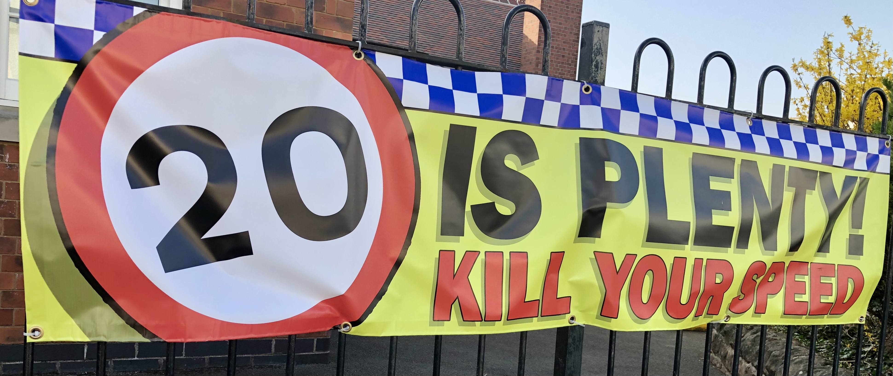
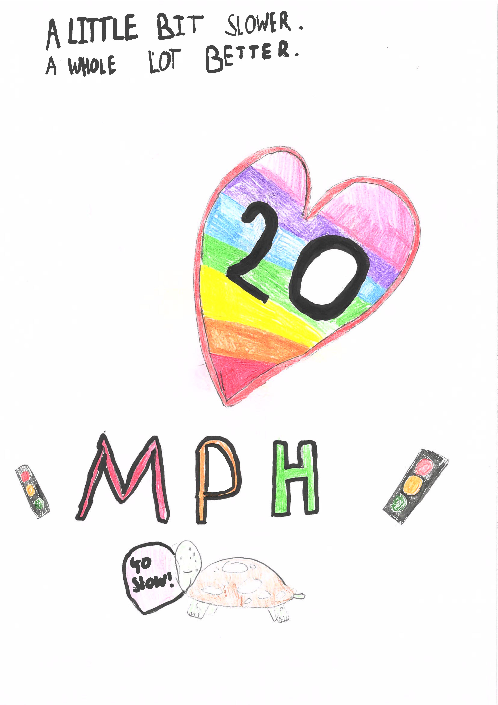
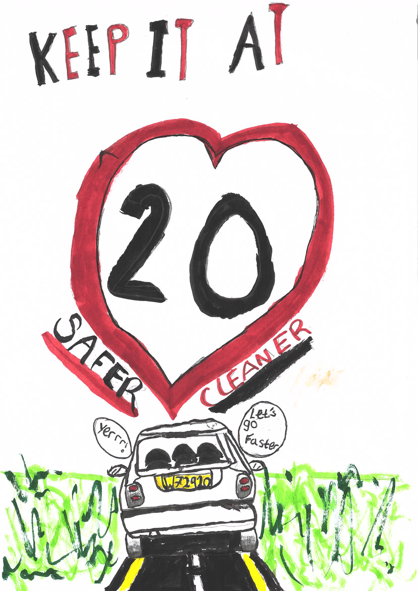
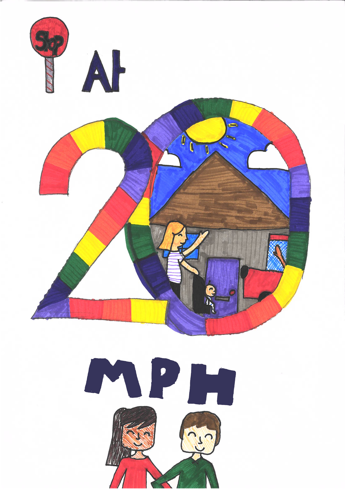
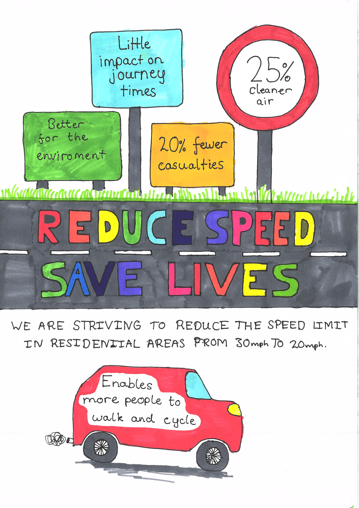

In amazing effort, the students at the West Bridgford Junior School have put their creativity into designing posters to make people think about slowing down!

Mrs Arnold and the Community Hub Team at the school organised an art competition and got an amazing response across all year groups.
You can see all the art work at https://wbjs-art.netlify.app/
The four winning entries (after intense voting) were:




Look out for giant versions of them around the school!